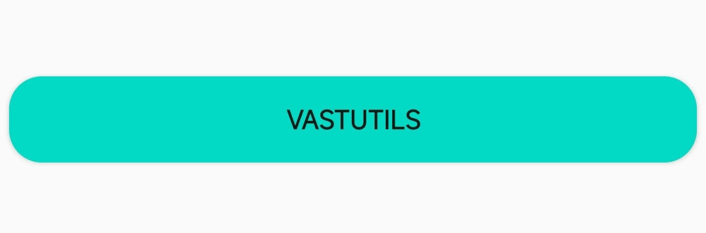
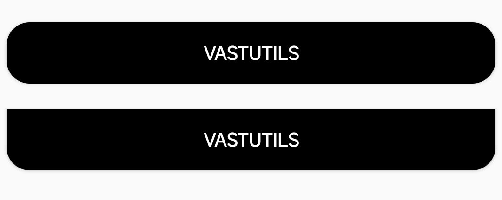
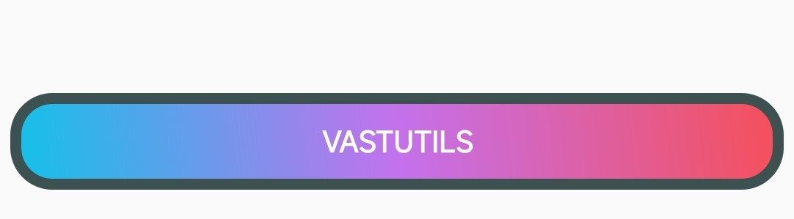

ShapeAndStateUtils
ShapeAndStateUtils是对GradientDrawable进行了封装，不必每次使用都需要创建shape.xml
快速开始
下面的示例为你演示了 ShapeAndStateUtils 的基础使用
val btnbk1 = ShapeAndStateUtils.create()
.setShape(RECTANGLE)
.setRadius(50f)
.setBkColor(getColor(R.color.teal_200))
.build()
mBinding.btn1.background = btnbk1

设置形状
你可以使用 setShape 方法去设置形状，目前支持
RECTANGLE ， OVAL ， LINE ， RING四种形状
val btnbk1 = ShapeAndStateUtils.create()
.setShape(OVAL)
.build()
设置圆角
当你的按钮形状是 RECTANGLE 时，你可以通过下列方式设置圆角
// 设置四个圆角，半径均为50.0
val btnbk1 = ShapeAndStateUtils.create()
.setShape(RECTANGLE)
.setRadius(50f)
.build()
// 设置四个大小不同的圆角
val btnbk2 = ShapeAndStateUtils.create()
.setShape(RECTANGLE)
.setRadius(0f,0f,50f,50f)
.build()

设置渐变
ShapeAndStateUtils目前支持两种渐变颜色形式
- startColor->endColor
- startColor->centerColor->endColor
// startColor->centerColor->endColor
val btnbk1 = ShapeAndStateUtils.create()
.setShape(RECTANGLE)
.setRadius(50f)
.setGradient(45, colorHex2Int("#12c2e9"),colorHex2Int("#c471ed"),colorHex2Int("#f64f59"))
.build()
// startColor->endColor
val btnbk2 = ShapeAndStateUtils.create()
.setShape(RECTANGLE)
.setRadius(50f)
.setGradient(45, colorHex2Int("#0F2027"),colorHex2Int("#78ffd6"))
.build()

添加边框
val btnbk1 = ShapeAndStateUtils.create()
.setShape(RECTANGLE)
.setRadius(50f)
.setGradient(45, colorHex2Int("#12c2e9"),colorHex2Int("#c471ed"),colorHex2Int("#f64f59"))
.setStroke(15f, colorHex2Int("#3E5151"))
.build()

以上便是 ShapeAndStateUtils 的基础使用
定义不同状态下的颜色
我们知道有时候对于控件的不同状态，我们希望其呈现不同的颜色，当然 ShapeAndStateUtils 为你提供了 setBgColorStateList 和 setStrokeColorStateList 方法来帮助你实现此功能，以下为示例
// 定义状态
val states = arrayOfNulls<IntArray>(6).apply {
set(0, intArrayOf(android.R.attr.state_pressed, android.R.attr.state_enabled))
set(1, intArrayOf(android.R.attr.state_focused, android.R.attr.state_enabled))
set(2, intArrayOf(-android.R.attr.state_focused, android.R.attr.state_enabled))
set(3, intArrayOf(android.R.attr.state_focused))
set(4, intArrayOf(android.R.attr.state_window_focused))
set(5, intArrayOf())
}
// 定义不同状态下对应的颜色
val colorList = IntArray(6).apply {
set(0, colorHex2Int("#00F260"))
set(1, colorHex2Int("#FFFFFF"))
set(2, colorHex2Int("#0575E6"))
set(3, colorHex2Int("#FFFFFF"))
set(4, colorHex2Int("#EF3B36"))
set(5, colorHex2Int("#0575E6"))
}
val btnbk1 = ShapeAndStateUtils.create()
.setShape(RECTANGLE)
.setRadius(50f)
.setStroke(15f, colorHex2Int("#3E5151"))
.setBgColorStateList(states,colorList)
.build()